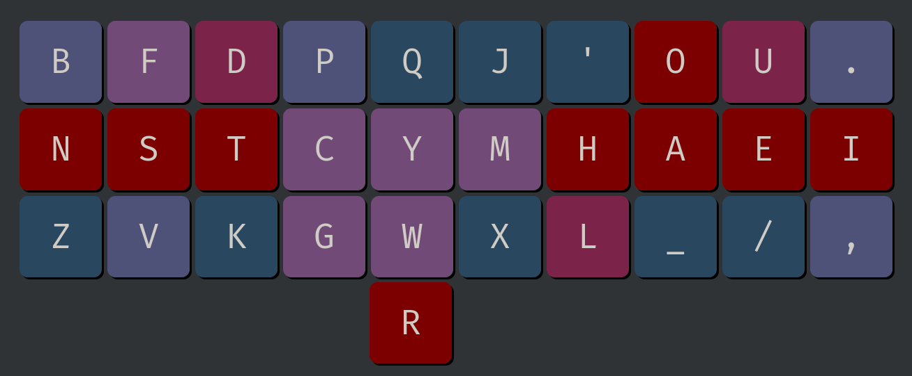
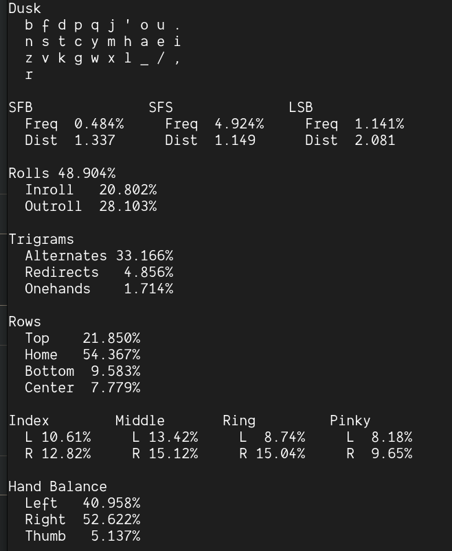
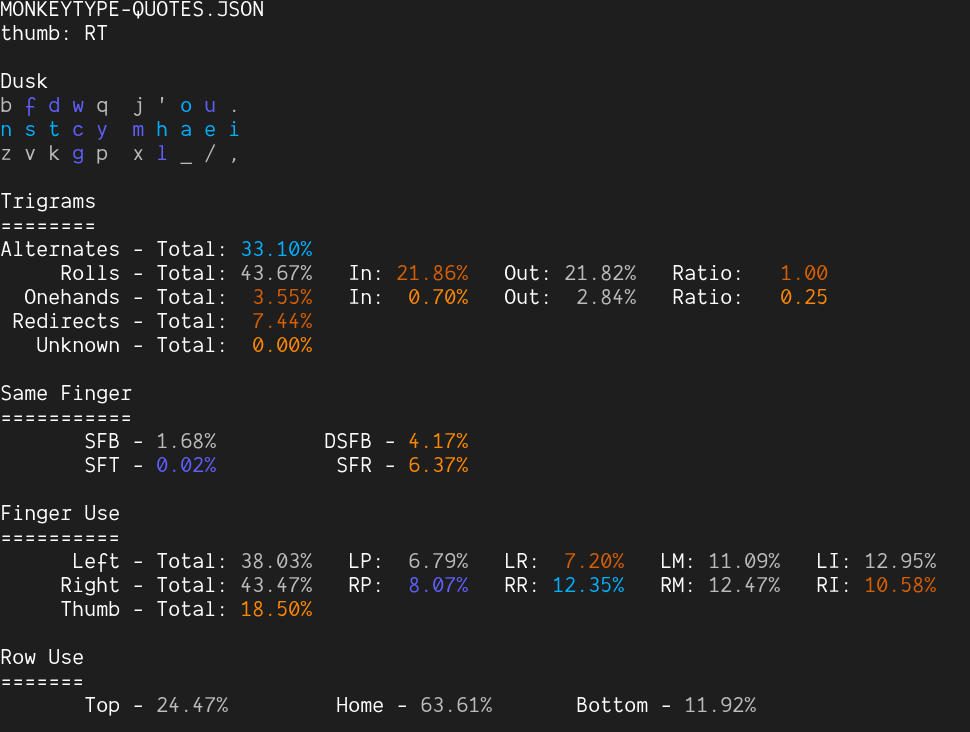
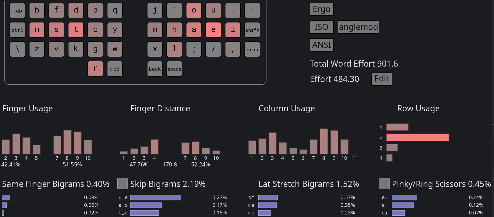
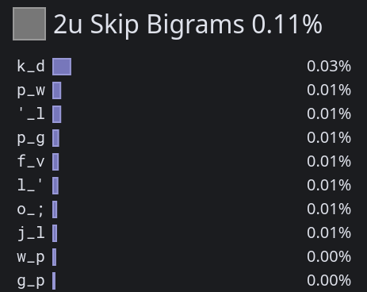

Statistics
- Heatmap
- Oxeylyzer
- Genkey
- Krillyzer
- Keysolve
- Cmini
- a200
- Cyanophage
- 2U SFS
- Finger Usage
- SFS Finger Distribution (Cmini)
- SFBS Finger Distribution (Cmini)
Heatmap

Oxeylyzer
- No thumb key support
- Highest finger speed is on right ring at 0.769

Genkey
- No thumb key support
- Highest finger speed is on right index at 1.59

Krillyzer
- Krillyzer is mainly used for analyzing SFS and SFBS distance
- SFS distance at 1.149
- SFB distance at 1.337

Keysolve
- It only support right thumb key, so it needs to be mirrored.
- I mainly look at HSB, HSS, FSB, and FSS here.

Cmini
dusk
b f d p q j ' o u .
n s t c y m h a e i
z v k g w x l _ / ,
r
MONKEYRACER:
Alt: 28.22%
Rol: 47.95% (In/Out: 20.92% | 27.02%)
One: 1.75% (In/Out: 0.74% | 1.02%)
Rtl: 49.70% (In/Out: 21.66% | 28.04%)
Red: 3.32% (Bad: 0.32%)
SFB: 0.38%
SFS: 3.77% (Red/Alt: 1.07% | 2.70%)
LH/RH: 46.90% | 53.10%
a200
- Right thumb space setting

Cyanophage
- Its finger usage doesn't include the thumb
Ror space. - It was speculated that its SFS include space, so it is much lower than other tools.

2U SFS
-
Cyanophage's tool is one of the only tools that show 2u SFS.
-
If you alt
'll, the actually number is 0.10%. -
There is the hidden
P__G(mostly-pingas inhoping) andK__D(kind), but they are not that common.

Finger Usage
-
Duskis right-hand heavy. -
If you are of the belief that thumb shouldn't count, then its
L:R = 38.81:54.76 = 41.48:58.52, which is about as imbalanced asCanary-orthoat42.24:57.76. -
If you are of the belief that thumb should count, then it is even worse than
41.48:58.52because space is by far the most common letter (more thanE).
dusk (usage)
b f d p q j ' o u .
n s t c y m h a e i
z v k g w x l _ / ,
r
MONKEYRACER:
LI: 10.21% RI: 13.35%
LM: 12.02% RM: 15.25%
LR: 8.05% RR: 16.58%
LP: 8.53% RP: 9.58%
LT: 6.44%
Total: 100.00%
SFS Finger Distribution (Cmini)
-
The total 3.98% is actually a more accurate number than the Cmini stat above due to some lower/upper case conversion issues in Cmini.
-
No finger gets over 1%.
-
Right index taking the most load at 0.98%, but it really only handles
HLMas the other 3 keys are low frequency.
dusk (sfs)
b f d p q j ' o u .
n s t c y m h a e i
z v k g w x l _ / ,
r
MONKEYRACER:
LI: 0.63% RI: 0.98%
LM: 0.45% RM: 0.54%
LR: 0.25% RR: 0.64%
LP: 0.13% RP: 0.37%
LT: 0.00%
Total: 3.98%
SFBS Finger Distribution (Cmini)
-
The total 0.48% is actually a more accurate number than the Cmini stat above due to some lower/upper case conversion issues in Cmini.
-
No finger gets over 0.20%
-
The majority of SFB for right index is attributed by
'm, which is designed to be alted ('ltoo).
dusk (sfb)
b f d p q j ' o u .
n s t c y m h a e i
z v k g w x l _ / ,
r
MONKEYRACER:
LI: 0.09% RI: 0.16%
LM: 0.01% RM: 0.07%
LR: 0.02% RR: 0.13%
LP: 0.01% RP: 0.00%
Total: 0.48%